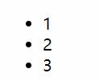
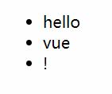
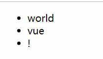

一个基本的v-for指令使用如下:
HTML:
<ul id="root">
<li v-for="item in list">
{{ item }}
</li>
</ul>
JavaScript:
new Vue({
el: '#root',
data: {
list:[1,2,3]
}
})
图片:输出内容:

图片:DOM结构:
使用v-for指令可以迭代一个列表中的内容,迭代的次数取决于列表(数组)的长度.
在上个例子中我们的数组长度为3,结果中就创建了3个<p>标签.
而v-for="item in list"中list就是需要被迭代的列表(数组),而item每次循环时候的具体内容.
上个例子中我们演示了v-for指令迭代一个列表(数组).
同样的v-for指令也可以迭代一个对象:
HTML:
<ul id="root">
<li v-for="value in obj">
{{ value }}
</li>
</ul>
JavaScript:
new Vue({
el: '#root',
data: {
obj:{
firstWord:'hello',
lastWord:'vue'
}
}
})
输出:
· hello
· vue
在JavaScript原生的数组迭代中有一个forEach方法,该方法有着如下的可选参数:
[1,2,3].forEach(function(value,index,array){
// value == 每次循环时候元素的值
// index == 当前循环的下标
// array == 数组本身
})
v-for指令同样提供了上述参数,现在我们来尝试迭代一个数组:
HTML:
<ul id="root">
<li v-for="(item,index) in list">
{{ item +'--'+ index +'--'+ list }}
</li>
</ul>
JavaScript:
new Vue({
el: '#root',
data: {
list:['one','two','three']
}
})
图片:v-for迭代列表使用额外参数效果:

上例中:
现在我们来尝试一下对象的语法:
HTML:
<ul id="root">
<li v-for="(value,key,index) in obj">
{{ key +'--'+ value +'--'+ index }}
</li>
</ul>
JavaScript:
new Vue({
el: '#root',
data: {
obj:{
firstWrod:'hello',
lastWord:'vue'
}
}
})
图片:v-for迭代对象使用额外参数效果:

上例中:
key还记得第六章中条件渲染中的key属性吗,给元素指定一个不唯一的值,告诉Vue他们不是同一个元素来避免元素的复用.
在列表渲染中,也有key属性但是含义不同.
实际上这个属性是必须传递的,只是在上面的例子中为了简化没有提供.
当 Vue.js 用 v-for 正在更新已渲染过的元素列表时，它默认用“就地复用”策略。如果数据项的顺序被改变，Vue 将不会移动 DOM 元素来匹配数据项的顺序， 而是简单复用此处每个元素，并且确保它在特定索引下显示已被渲染过的每个元素。
{1}
{1} 简单的来讲默认的情况下Vue不会去修改DOM来渲染改变后的列表.而是仅仅替换元素的属性或者内部的文本把它变成符合列表的样子.为了给 Vue 一个提示，以便它能跟踪每个节点的身份，从而重用和重新排序现有元素，你需要为每项提供一个唯一 key 属性。理想的 key 值是每项都有的唯一 id。这个特殊的属性相当于 Vue 1.x 的 track-by ，但它的工作方式类似于一个属性，所以你需要用 v-bind 来绑定动态值：
<div v-for="item in items" :key="item.id">
<!-- 内容 -->
</div>
建议尽可能在使用 v-for 时提供 key，除非遍历输出的 DOM 内容非常简单，或者是刻意依赖默认行为以获取性能上的提升。
因为它是 Vue 识别节点的一个通用机制，key 并不与 v-for 特别关联，key 还具有其他用途，我们将在后面的指南中看到其他用途。
这一章稍显复杂,但是关键的问题是Vue有时候会在数据改变的时候获取不到更新.
一旦Vue获取不到数据的更新那么,也就无法进行响应式渲染.
总得来说,这个问题凸显在两个部分:
在下面的表格中,我列举了所有的修改数组的方法,并且给出了补救策略:
| 修改方法 | 描述 | 是否可以触发响应式 | 补救策略 |
|---|---|---|---|
| [0] = 'xxx' | 利用下标直接赋值 | 否 | 使用Vue提供的Vue.set() |
| [].length='x' | 修改数组的length | 否 | 同上或者使用vm.items.splice(newLength) |
| [].push() | 向数组添加内容 | 是 | |
| [].pop() | 获取数组的内容 | 是 | |
| [].shift() | 获取数组的内容 | 是 | |
| [].unshift() | 向数组添加内容 | 是 | |
| [].splice() | 切割或修改数组 | 是 | |
| [].sort() | 排序数组 | 是 | |
| [].reverse() | 反转数组 | 是 | |
| [].filter() | 过滤数组内容 | 否 | 获取返回值然后重新赋值 vm.list = vm.list.filter(xxx) |
| [].concat() | 连接多个数组 | 否 | 同上 |
| [].slice() | 切割数组 | 否 | 同上 |
为了展示问题所在运行如下的例子:
HTML:
<ul id="root">
<li v-for="item in list">
{{ item }}
</li>
</ul>
JavaScript:
var app = new Vue({
el: '#root',
data: {
list:['hello','vue','!']
}
});
console.log(app.list[0]); // 输出 hello
app.list[0] = 'world';
console.log(app.list[0]); // 输出 world
图片:直接使用数组下标赋值后的效果:

可以看到即使我修改了数组的内容,但是Vue没有进行重新渲染.
下面的例子中,我们在执行的时候动态的给data中添加一个属性:
HTML:
<ul id="root">
<p v-if="info.name">
{{ info.name }}
{{ info.age }}
</p>
</ul>
JavaScript:
var app = new Vue({
el: '#root',
data: {
info:{
name:''
}
},
// mounted -- Vue声明周期钩子函数之一
mounted:function(){
this.info.age = 20;
this.info.name = 'ASCll';
}
});
在这个例子中不仅仅age属性无法添加,甚至由于age不存在导致报错.
图片:报错:
补救办法:使用Vue.set().
Vue.set()是Vue的静态方法.
该方法定义如下:
Vue.set( target, key, value )
| 键名 | 含义 |
|---|---|
| target | 要修改的目标 |
| key | 目标的键名 |
| value | 对应键名的值 |
现在我们使用Vue.set修复上面数组例子中的问题:
var app = new Vue({
el: '#root',
data: {
list:['hello','vue','!']
}
});
console.log(app.list[0]); // hello
Vue.set(app.list,0,'world');
console.log(app.list[0]); // world
图片:使用Vue.set后的结果:

另外一个例子使用Vue.set修复上面对象例子中的问题:
var app = new Vue({
el: '#root',
data: {
info:{
name:''
}
},
// mounted -- Vue声明周期钩子函数之一
mounted:function(){
Vue.set(this.info,'age',20);
this.info.name = 'ASCll';
}
});
图片:使用Vue.set后的结果:

对于JavaScript的数组方法按照操作方式分为两种:
在分类1中常见的方法有push,pop等,而第二类就是诸如filter,map,concat等方法.
示例filter的解决方式,其余返回数组的方法同理:
HTML:
<ul id="root">
<p v-for="item in list" >
{{ item }}
</p>
</ul>
JavaScript:
var app = new Vue({
el: '#root',
data: {
list:[20,30,40,50]
},
mounted:function(){
var result = this.list.filter(function (value) {
return value<30;
});
console.log(result) // [20]
this.list = result;
}
});
在最终的输出中最后只有结果小于30的内容留了下来,在这个例子中最后只有20被渲染.
有时，我们想要显示一个数组的过滤或排序副本，而不实际改变或重置原始数据。在这种情况下，可以创建返回过滤或排序数组的计算属性。
HTML:
<li v-for="n in evenNumbers">{{ n }}</li>
JavaScript:
data: {
numbers: [ 1, 2, 3, 4, 5 ]
},
computed: {
evenNumbers: function () {
return this.numbers.filter(function (number) {
return number % 2 === 0
})
}
}
在计算属性不适用的情况下 (例如，在嵌套 v-for 循环中) 你可以使用一个 method 方法：
HTML:
<li v-for="n in even(numbers)">{{ n }}</li>
JavaScript:
data: {
numbers: [ 1, 2, 3, 4, 5 ]
},
methods: {
even: function (numbers) {
return numbers.filter(function (number) {
return number % 2 === 0
})
}
}
v-for 也可以取整数。在这种情况下，它将重复多次模板。
<div>
<span v-for="n in 10">{{ n }} </span>
</div>
图片:重复多次整数

template上使用v-for在条件渲染一章我们使用<template>占位元素一次数输出多个占位元素内部的内容.
在v-for上同样可以使用<template>来渲染多个元素.
HTML:
<ul>
<template v-for="item in items">
<li>{{ item.msg }}</li>
<li class="divider" role="presentation"></li>
</template>
</ul>
v-for中的v-if由于Vue有循环和判断的模板语法,难免不难让使用者想到如下的模板写法:
HTML:
<li v-for="todo in todos" v-if="!todo.isComplete">
{{ todo }}
</li>
这是可以运行的Vue会先执行v-if判断,判断通过后才会执行v-for语句.
在上面的例子中会过滤没有完成的内容的输出.
而如果你的目的是有条件地跳过循环的执行，那么可以将 v-if 置于外层元素 (或
<template>)上。如：
HTML:
<ul v-if="todos.length">
<li v-for="todo in todos">
{{ todo }}
</li>
</ul>
<p v-else>No todos left!</p>
v-for中使用v-if实际上这个问题很简单,在v-for中使用v-if无非是为了过滤掉一些数据.
这么做有很多坏处:
替代方案:
v-for迭代过滤后的列表.